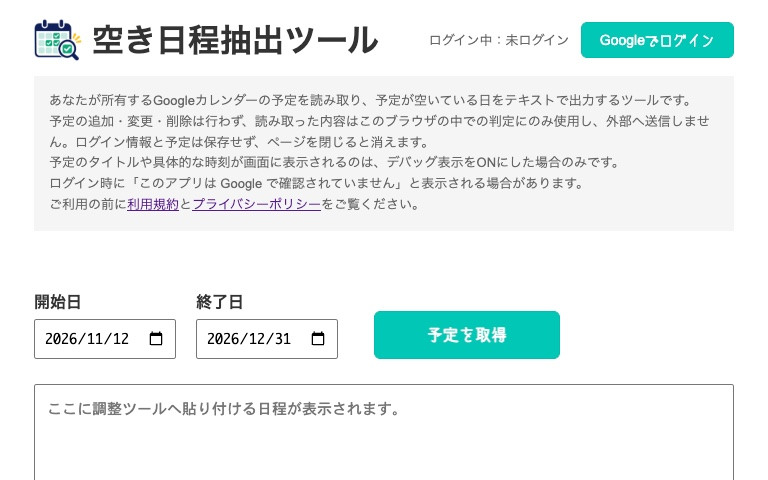
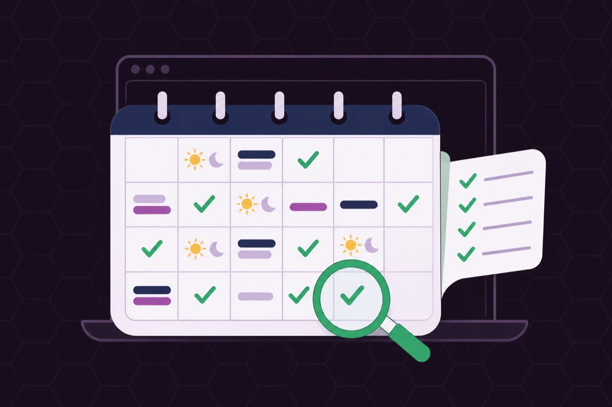
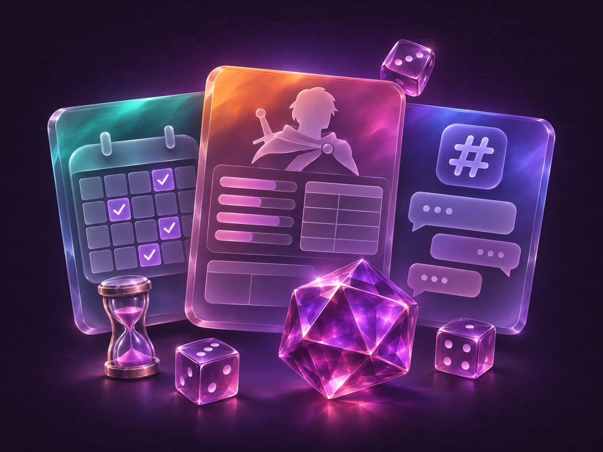
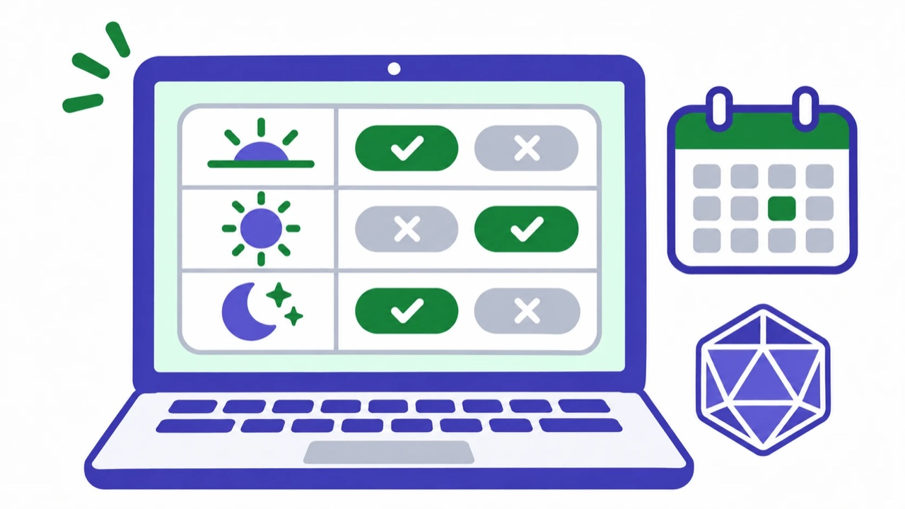
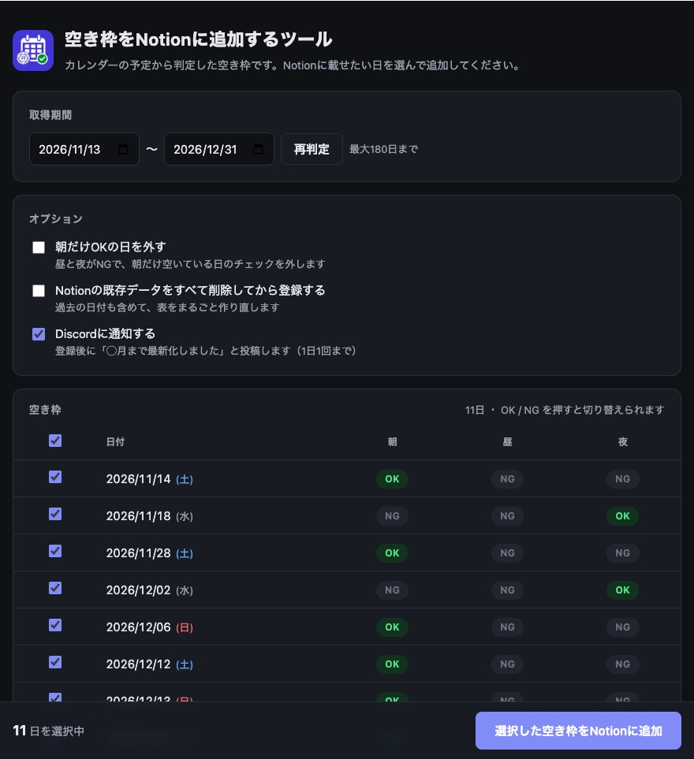
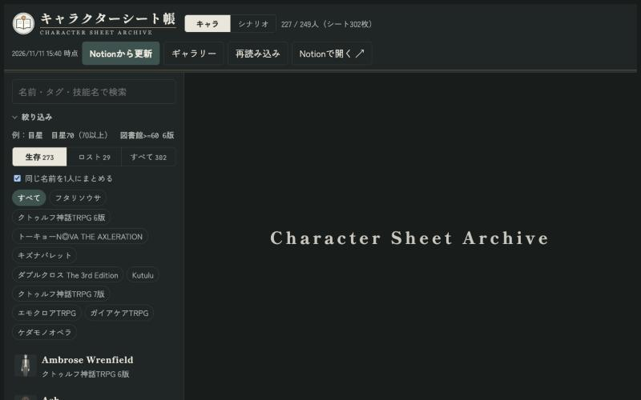
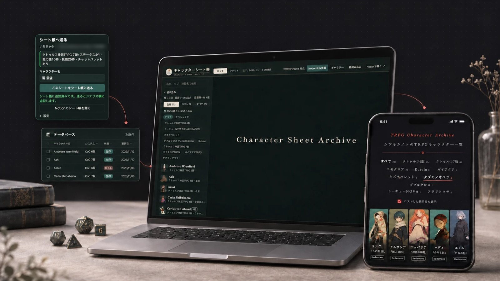
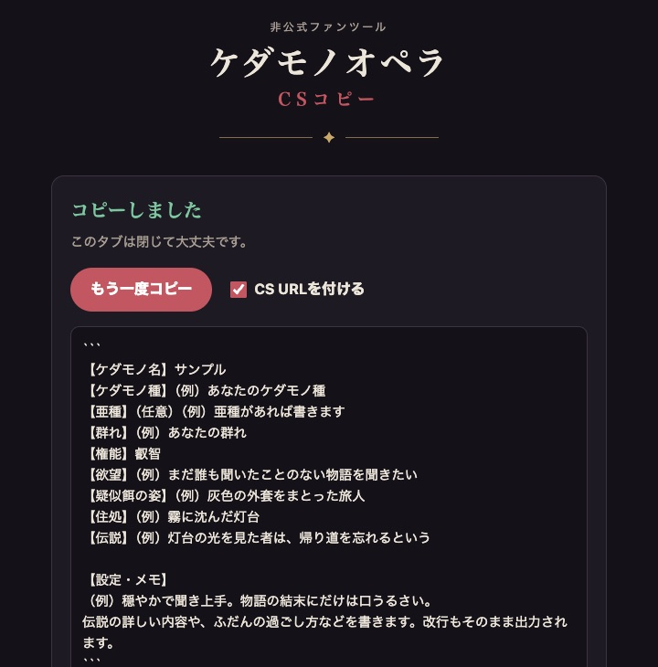

空き日程抽出ツール


遊ぶ中で「ここが面倒だな」と思ったところを、自分で作って解決してきたツールの置き場です。日程調整、キャラクターシートの管理、Discord サーバーの運営まわりのものを公開しています。

用途ごとにまとめています。




trpg_availability2notion
カレンダーから朝・昼・夜の空き枠を判定し、確認してから Notion の空き枠表に登録します。登録したら Discord に「◯月まで最新化しました」と通知します。


trpg_charsheet_book
各サイトのキャラクターシートを Chrome 拡張で Notion に集め、システム・タグ・技能値で絞り込める一覧ページにします。300枚以上のシートを管理しています。閲覧ページは、立ち絵の著作権に配慮して非公開にしています。

